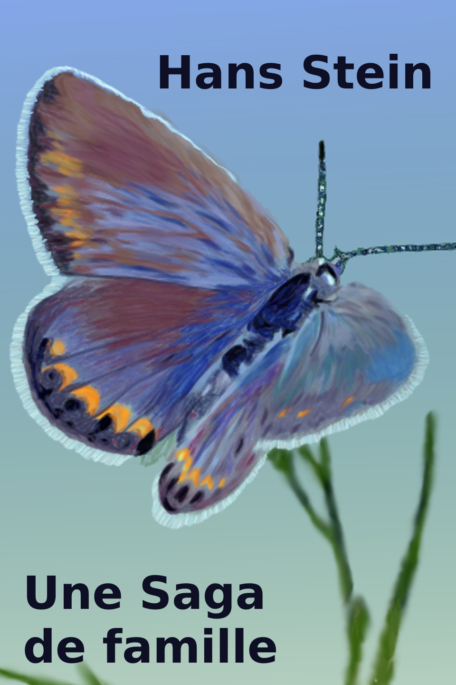

Une science-fiction fantasiste, fantastique et imaginaire en format 3D web. Illustrée de vidéos, animations, images 3D, musique et effets sonores. Une bande dessinée web interactive qui avance à votre cadence.
Camic Comix présente: Le catalogue des rêves de nuit.
English
